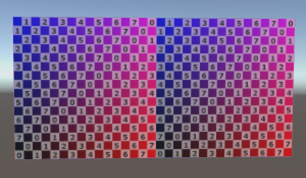
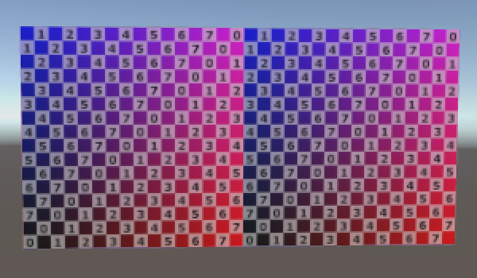

Procedural Grid
Programming Form
- Create a grid of points.
- Use a coroutine to analyze their placement.
- Define a surface with triangles.
- Automatically generate normals.
- Add texture coordinates and tangents.
In this tutorial we'll create a simple grid of vertices and triangles.
This tutorial assumes that you are familiar with the basics of Unity scripting. See Clock for these basics. Constructing a Fractal provides an introduction to coroutines. This tutorial has been made for Unity 5.0.1 and up.
Rendering Things
If you want to visualize something in Unity, you use a mesh. It could be a 3D model exported from another program. It could be a procedurally generated mesh. It could be a sprite, UI element, or particle system, for which Unity uses meshes as well. Even screen effects are rendered with a mesh.
So what is a mesh? Conceptually, a mesh is a construct used by the graphics hardware to draw complex stuff. It contains at least a collection of vertices that define points in 3D space, plus a set of triangles – the most basic 2D shapes – that connect these points. The triangles form the surface of whatever the mesh represents.
As triangles are flat and have straight edges, they can be used to perfectly visualize flat and straight things, like the faces of a cube. Curved or round surfaces can only be approximated by using many small triangles. If the triangles appear small enough – no larger than a single pixel – then you won't notice the approximation. Typically that's not feasible for realtime performance, so the surfaces will always appear jagged to some degree.


If you want to have a game object display a 3D model, it needs to have two components. The first is a mesh filter. This component holds a reference to the mesh you wish to show. The second is a mesh renderer. You use it to configure how the mesh is rendered. Which material should be used, whether it should cast or receive shadows, and so on.
You can completely change the appearance of a mesh by adjusting its material. Unity's default material is simply solid white. You can replace it with your own by creating a new material asset via Assets / Create / Material and dragging it onto your game object. New materials use Unity's Standard shader by default, which gives you a set of controls to tweak how your surface behaves visually.
A quick way to add lots of detail to your mesh is by providing an albedo map. This is a texture that represents the basic color of a material. Of course we need to know how to project this texture onto the triangles of the mesh. This is done by adding 2D texture coordinates to the vertices. The two dimensions of texture space are referred to as U and V, which is why they're know as UV coordinates. These coordinates typically lie between (0, 0) and (1, 1), which covers the entire texture. Coordinates outside that range are either clamped or cause tiling, depending on the texture settings.

Creating a Grid of Vertices
So how do you make your own mesh? Let's find out, by generating a simple rectangular grid. The grid will consist of square tiles – quads – of unit length. Create a new C# script and turn it into a grid component that has a horizontal and vertical size.
using UnityEngine;
using System.Collections;
public class Grid : MonoBehaviour {
public int xSize, ySize;
}
When we add this component to a game object, we need to give it a mesh filter and mesh renderer as well. We can add an attribute to our class to have Unity automatically add them for us.
[RequireComponent(typeof(MeshFilter), typeof(MeshRenderer))]
public class Grid : MonoBehaviour {
public int xSize, ySize;
}
Now you can create a new empty game object, add the grid component to it, and it will have the other two components as well. Set the material of the renderer and leave the filter's mesh undefined. I set the grid's size to 10 by 5.
We generate the actual mesh as soon as the object awakens, which happens when we enter play mode.
private void Awake () {
Generate();
}
Let's focus on the vertex positions first and leave the triangles for later. We need to hold an array of 3D vectors to store the points. The amount of vertices depends on the size of the grid. We need a vertex at the corners of every quad, but adjacent quads can share the same vertex. So we need one more vertex than we have tiles in each dimension.
`(#x + 1)(#y + 1)`
private Vector3[] vertices;
private void Generate () {
vertices = new Vector3[(xSize + 1) * (ySize + 1)];
}
Let's visualize these vertices so we can check that we position them correctly. We can do so by adding an OnDrawGizmos method and drawing a small black sphere in the scene view for every vertex.
private void OnDrawGizmos () {
Gizmos.color = Color.black;
for (int i = 0; i < vertices.Length; i++) {
Gizmos.DrawSphere(vertices[i], 0.1f);
}
}
This will produce errors when we are not in play mode, because OnDrawGizmos methods are also invoked while Unity is in edit mode, when we don't have any vertices. To prevent this error, check whether the array exists and jump out of the method if it isn't.
private void OnDrawGizmos () {
if (vertices == null) {
return;
}
…
}
While in play mode, we see only a single sphere at the origin. This is because we haven't positioned the vertices yet, so they all overlap at that position. We have to iterate through all positions, using a double loop.
private void Generate () {
vertices = new Vector3[(xSize + 1) * (ySize + 1)];
for (int i = 0, y = 0; y <= ySize; y++) {
for (int x = 0; x <= xSize; x++, i++) {
vertices[i] = new Vector3(x, y);
}
}
}
We now see the vertices, but the order in which they were placed isn't visible. We could use color to show this, but we can also slow down the process, by using a coroutine. This is why I included using System.Collections in the script.
private void Awake () {
StartCoroutine(Generate());
}
private IEnumerator Generate () {
WaitForSeconds wait = new WaitForSeconds(0.05f);
vertices = new Vector3[(xSize + 1) * (ySize + 1)];
for (int i = 0, y = 0; y <= ySize; y++) {
for (int x = 0; x <= xSize; x++, i++) {
vertices[i] = new Vector3(x, y);
yield return wait;
}
}
}
Creating the Mesh
Now that we know that the vertices are positioned correctly, we can deal with the actual mesh. Besides holding a reference to it in our own component, we must also assign it to the mesh filter. Then once we dealt with the vertices, we can give them to our mesh.
private Mesh mesh;
private IEnumerator Generate () {
WaitForSeconds wait = new WaitForSeconds(0.05f);
GetComponent<MeshFilter>().mesh = mesh = new Mesh();
mesh.name = "Procedural Grid";
vertices = new Vector3[(xSize + 1) * (ySize + 1)];
…
mesh.vertices = vertices;
}
We now have a mesh in play mode, but it doesn't show up yet because we haven't given it any triangles. Triangles are defined via an array of vertex indices. As each triangle has three points, three consecutive indices describe one triangle. Let's start with just one triangle.
private IEnumerator Generate () {
…
int[] triangles = new int[3];
triangles[0] = 0;
triangles[1] = 1;
triangles[2] = 2;
mesh.triangles = triangles;
}
We now have one triangle, but the three points that we are using all lie in a straight line. This produces a degenerate triangle, which isn't visible. The first two vertices are fine, but then we should jump to the first vertex of the next row.
triangles[0] = 0; triangles[1] = 1; triangles[2] = xSize + 1;
This does give us a triangle, but it's visible from only one direction. In this case, it's only visible when looking in the opposite direction of the Z axis. So you might need to rotate the view to see it.
Which side a triangle is visible from is determined by the orientation of its vertex indices. By default, if they are arranged in a clockwise direction the triangle is considered to be forward-facing and visible. Counter-clockwise triangles are discarded so we don't need to spend time rendering the insides of objects, which are typically not meant to be seen anyway.
So to make the triangle appear when we look down the Z axis, we have to change the order in which its vertices are traversed. We can do so by swapping the last two indices.
triangles[0] = 0; triangles[1] = xSize + 1; triangles[2] = 1;
We now have one triangle that covers half of the first tile of our grid. To cover the entire tile, all we need is a second triangle.
int[] triangles = new int[6]; triangles[0] = 0; triangles[1] = xSize + 1; triangles[2] = 1; triangles[3] = 1; triangles[4] = xSize + 1; triangles[5] = xSize + 2;

As these triangles share two vertices, we could reduce this to four lines of code, explicitly mentioning each vertex index only once.
triangles[0] = 0; triangles[3] = triangles[2] = 1; triangles[4] = triangles[1] = xSize + 1; triangles[5] = xSize + 2;
We can create the entire first row of tiles by turning this into a loop. As we're iterating over both vertex and triangle indices, we have to keep track of both. Let's also move the yield statement into this loop, so we no longer have to wait for the vertices to appear.
int[] triangles = new int[xSize * 6];
for (int ti = 0, vi = 0, x = 0; x < xSize; x++, ti += 6, vi++) {
triangles[ti] = vi;
triangles[ti + 3] = triangles[ti + 2] = vi + 1;
triangles[ti + 4] = triangles[ti + 1] = vi + xSize + 1;
triangles[ti + 5] = vi + xSize + 2;
yield return wait;
}
The vertex gizmos now immediately appear, and the triangles all appear at once after a short wait. To see the tiles appear one by one, we have to update the mesh each iteration, instead of only after the loop.
mesh.triangles = triangles; yield return wait;
Now fill the entire grid by turning the single loop into a double loop. Note that moving to the next row requires incrementing the vertex index by one, because there's one more vertex than tiles per row.
int[] triangles = new int[xSize * ySize * 6];
for (int ti = 0, vi = 0, y = 0; y < ySize; y++, vi++) {
for (int x = 0; x < xSize; x++, ti += 6, vi++) {
…
}
}

As you can see, the entire grid is now filled with triangles, one row at a time. Once you're satisfied with that, you can remove all the coroutine code so the mesh will be created without delay.
private void Awake () {
Generate();
}
private void Generate () {
GetComponent<MeshFilter>().mesh = mesh = new Mesh();
mesh.name = "Procedural Grid";
vertices = new Vector3[(xSize + 1) * (ySize + 1)];
for (int i = 0, y = 0; y <= ySize; y++) {
for (int x = 0; x <= xSize; x++, i++) {
vertices[i] = new Vector3(x, y);
}
}
mesh.vertices = vertices;
int[] triangles = new int[xSize * ySize * 6];
for (int ti = 0, vi = 0, y = 0; y < ySize; y++, vi++) {
for (int x = 0; x < xSize; x++, ti += 6, vi++) {
triangles[ti] = vi;
triangles[ti + 3] = triangles[ti + 2] = vi + 1;
triangles[ti + 4] = triangles[ti + 1] = vi + xSize + 1;
triangles[ti + 5] = vi + xSize + 2;
}
}
mesh.triangles = triangles;
}
unitypackage
Generating Additonal Vertex Data
Our grid is currently lit in a peculiar way. That's because we haven't given any normals to the mesh yet. The default normal direction is (0, 0, 1) which is the exact opposite of what we need.
Normals are defined per vertex, so we have to fill another vector array. Alternatively, we can ask the mesh to figure out the normals itself based on its triangles. Let's be lazy this time and do that.
private void Generate () {
…
mesh.triangles = triangles;
mesh.RecalculateNormals();
}

Next up are the UV coordinates. You might have noticed that the grid currently has a uniform color, even though it uses a material with an albedo texture. This makes sense, because if we don't provide the UV coordinates ourselves then they're all zero.
To make the texture to fit our entire grid, simply divide the position of the vertex by the grid dimensions.
vertices = new Vector3[(xSize + 1) * (ySize + 1)];
Vector2[] uv = new Vector2[vertices.Length];
for (int i = 0, y = 0; y <= ySize; y++) {
for (int x = 0; x <= xSize; x++, i++) {
vertices[i] = new Vector3(x, y);
uv[i] = new Vector2(x / xSize, y / ySize);
}
}
mesh.vertices = vertices;
mesh.uv = uv;
The texture shows up now, but it's not covering the entire grid. Its exact appearance depends on whether the texture's wrap mode is set to clamp or repeat. This happens because we're currently dividing integers by integers, which results in another integer. To get the correct coordinates between zero and one across the entire grid, we have to make sure that we're using floats.
uv[i] = new Vector2((float)x / xSize, (float)y / ySize);
The texture is now projected onto the entire grid. As I've set the grid's size to ten by five, the texture will appear stretched horizontally. This can be countered by adjusting the texture's tiling settings of the material. By settings it to (2, 1) the U coordinates will be doubled. If the texture is set to repeat, then we'll see two square tiles of it.
 

Another way to add more apparent detail to a surface is to use a normal map. These maps contain normal vectors encoded as colors. Applying them to a surface will result in much more detailed light effects than could be created with vertex normals alone.


Applying this material to our grid produces bumps, but they are incorrect. We need to add tangent vectors to our mesh to properly orient them.
As we have a flat surface, all tangents simply point in the same direction, which is to the right.
vertices = new Vector3[(xSize + 1) * (ySize + 1)];
Vector2[] uv = new Vector2[vertices.Length];
Vector4[] tangents = new Vector4[vertices.Length];
Vector4 tangent = new Vector4(1f, 0f, 0f, -1f);
for (int i = 0, y = 0; y <= ySize; y++) {
for (int x = 0; x <= xSize; x++, i++) {
vertices[i] = new Vector3(x, y);
uv[i] = new Vector2((float)x / xSize, (float)y / ySize);
tangents[i] = tangent;
}
}
mesh.vertices = vertices;
mesh.uv = uv;
mesh.tangents = tangents;
Now you know how to create a simple mesh and make it look more complex with materials. Meshes need vertex positions and triangles, usually UV coordinates too – up to four sets – and often tangents as well. You can also add vertex colors, although Unity's standard shaders don't use those. You can create your own shaders that do use those colors, but that's something for another tutorial.
Once you're satisfied with your grid, you can move on to the Rounded Cube tutorial.
unitypackage PDF